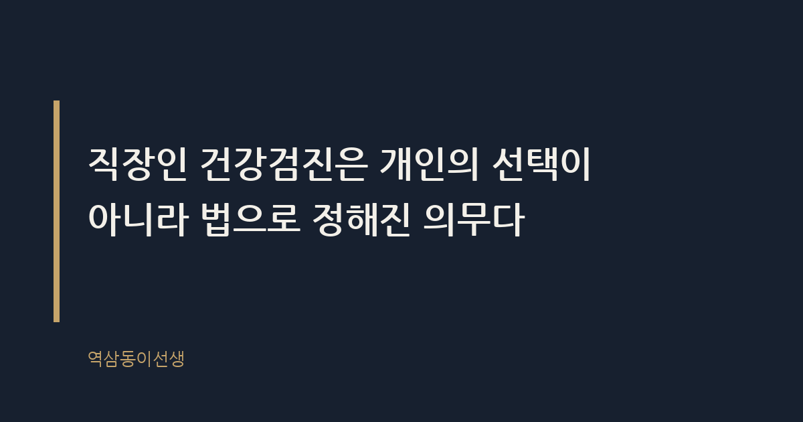
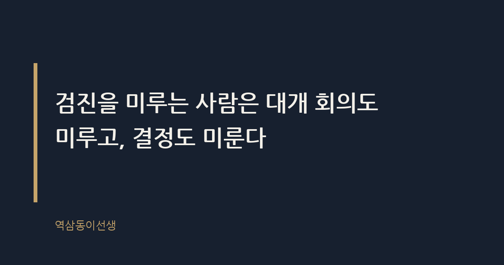

주제 연말이 다가오며 미루던 직장인 건강검진, 대상자 확인부터 미수검 시 불이익까지 지금 챙겨야 할 것들을 정리한다 (demand / office)
제목 후보
- 직장인 건강검진 대상자 기준과 미수검 불이익 정리
핵심 키워드 '직장인 건강검진'을 맨 앞에 두고 '대상자 기준', '미수검 불이익' 같은 실제 검색 꼬리를 붙여 정보성 쿼리에 맞췄다 - 직장인 건강검진, 연말 전 꼭 확인할 것들
'연말'이라는 시의성 키워드로 11~12월 검색 급증 패턴을 겨냥했다 - 직장인 건강검진 주기와 과태료, 지금 체크하자
'주기', '과태료' 같은 구체 쿼리 조합으로 롱테일 유입을 노렸다
메타 설명 직장인 건강검진 대상자 기준, 검진 주기, 미수검 시 불이익까지 연말 전 꼭 확인해야 할 내용을 정리했다.
라벨 직장인건강검진, 건강검진대상자, 건강검진과태료, 연말건강검진, 국가건강검진, 건강검진미루면, 직장인건강검진주기, 사무직건강검진2년, 건강검진미수검불이익, 일반건강검진대상자확인
실용 자산 계산·기준 표 — 대상자별 검진 주기와 연령 기준처럼 숫자·조건이 걸린 정보라 표로 정리해야 한눈에 비교된다
발행 전 팩트체크
- 산업안전보건법 시행령상 사업주 과태료 금액(1회 10만원, 2회 20만원, 3회 이상 30만원 등)이 현재 기준과 일치하는지 확인 필요
- 국가암검진 6대 암종의 대상 연령·주기(특히 간암 고위험군 주기)는 해마다 공단 고시로 조정될 수 있어 최신 공고 확인 필요
- 건강검진 이월신청(다음 연도 6월까지 연장) 제도의 운영 여부와 구체 기한은 국민건강보험공단 공지로 재확인 필요
- 비사무직 근로자의 '1년 1회' 기준과 사무직 '2년 1회' 기준 적용 범위(직종 구분 기준)는 산업안전보건법 시행규칙 원문 대조 필요
이미지 (Blogger 편집기에 드래그해 넣으세요)

도입부 사진 · ⓒ Free-Photos / Pexels


직장인 건강검진 대상자 기준과 미수검 불이익 정리
11월 말이 되면 회사 인트라넷에 꼭 뜨는 공지가 있다. "2025년도 건강검진 미수검자 명단 안내." 이름 옆에 빨간 글씨로 '미수검'이라고 떠 있으면 그제야 검진센터에 전화를 돌리는 사람들이 매년 나온다. 나도 한때 그중 하나였다.
직장인 건강검진은 미루다 보면 결국 연말에 한꺼번에 몰린다. 분명히 해두자. 직장인 건강검진은 개인의 선택이 아니라 법으로 정해진 의무이고, 올해 안에 받지 않으면 회사도 나도 곤란해진다. 대상자 확인부터 미수검 불이익까지, 지금 챙겨야 할 것만 정리한다.
직장인 건강검진, 왜 매년 연말에 몰릴까
인사팀에서 일하는 후배가 매년 하는 말이 있다. "10월까지는 조용하다가 11월부터 전화기 불난다." 직장인 건강검진은 1년 내내 받을 수 있는데도, 다들 연말에야 움직인다. 이유는 단순하다. 회사가 검진 기관과 계약을 맺는 시점, 예산 소진 주기, 그리고 인사평가 시즌이 겹치기 때문이다.
직장인 건강검진이 연말에 몰리는 이유는 사업장 대부분이 해당 연도 안에 검진을 마쳐야 하는 법정 기한 때문이다. 검진 유효기간은 해당 연도 12월 31일까지이고, 이 기한을 넘기면 다음 해로 자동 이월되지 않는다. 결국 "언젠가 받아야지" 하던 사람들이 12월 둘째 주쯤 한꺼번에 검진센터로 몰리고, 예약은 꽉 찬다. 실제로 연말이 다가오면 집 근처 검진센터에 전화를 걸어도 "다음 달 중순은 돼야 자리가 난다"는 답을 듣는 경우가 흔하다. 예약 전쟁은 매년 반복되는데도, 매년 같은 사람들이 늦는다.
직장인 건강검진 대상자 기준은 이렇다
직장인 건강검진이란 국민건강보험법과 산업안전보건법에 근거해 사업주가 소속 근로자에게 정기적으로 실시해야 하는 법정 건강검진이다. 대상은 직장가입자 본인과 피부양자, 지역가입자 세대주 등이다.
직종에 따라 주기가 다르다는 걸 모르는 사람이 의외로 많다. 사무직 근로자는 2년에 1회, 비사무직(생산직, 현장직 등)은 1년에 1회가 원칙이다. 여기서 사무직 기준은 단순히 "사무실에 앉아 있다"가 아니라 산업안전보건법 시행규칙상 직종 분류를 따른다. 외근이 잦은 영업직이나 현장을 겸하는 관리직은 회사마다 분류가 갈리니, 본인이 애매하다 싶으면 인사팀에 직종 분류를 한 번 확인해보는 게 맞다.
여기에 더해 유해 화학물질이나 소음, 분진에 노출되는 업무를 하는 근로자는 일반건강검진과 별도로 특수건강진단 대상이 되기도 한다. 생산라인이나 실험실 근무자가 "나는 일반검진만 받으면 되는 줄 알았다"고 하다가 뒤늦게 특수검진 대상이라는 걸 알게 되는 경우를 몇 번 봤다. 본인 업무가 유해인자 취급과 관련 있다면, 이 부분도 인사팀이나 산업보건 담당자에게 따로 확인해두는 게 좋다.
직장인 건강검진 대상자별 검진 주기표
검색해서 들어온 사람들이 가장 궁금해하는 건 결국 "나는 언제, 뭘 받아야 하나"다. 일반건강검진과 국가암검진을 기준으로 정리하면 다음과 같다.
| 구분 |
대상 |
주기 |
| 일반건강검진 (사무직) |
직장가입자 사무직 근로자 |
2년에 1회 |
| 일반건강검진 (비사무직) |
생산직·현장직 등 |
1년에 1회 |
| 위암 검진 |
만 40세 이상 |
2년에 1회 |
| 대장암 검진 |
만 50세 이상 |
1년에 1회 (분변잠혈검사) |
| 유방암 검진 |
만 40세 이상 여성 |
2년에 1회 |
| 자궁경부암 검진 |
만 20세 이상 여성 |
2년에 1회 |
본인이 올해 대상자인지는 국민건강보험공단 홈페이지나 '건강iN' 모바일 앱에서 공동인증서로 바로 조회된다. 회사 복지 담당자가 보내주는 안내 문자에도 대상 여부가 나오니, 받은 문자를 괜히 삭제하지 말고 캡처라도 해두길 권한다.
건강검진 비용, 회사가 다 내는 걸까
의외로 자주 받는 질문이다. "검진비 얼마 나와요?" 일반건강검진과 국가암검진은 건강보험공단이 비용을 부담하는 구조라, 대상자 기준에 맞는 기본 항목이라면 근로자가 따로 돈을 낼 일은 없다. 다만 위내시경 대신 위장조영검사를 선택하거나, 추가 옵션 검사를 끼워 넣으면 그 차액은 본인이 부담하게 된다. 검진센터 데스크에서 "이 항목 추가하시면 더 꼼꼼하게 볼 수 있어요"라는 말에 즉흥적으로 결제했다가 나중에 영수증 보고 놀라는 사람도 봤다.
검진 받으러 간 시간을 근무시간으로 인정해주는지는 회사마다 다르다. 어떤 회사는 '건강검진 특별휴가'라는 이름으로 반차나 연차를 따로 차감하지 않고, 어떤 회사는 연차를 써서 다녀오라고 한다. 이 부분은 법으로 일괄 정해진 게 아니라 회사 취업규칙이나 단체협약에 따라 달라지므로, 검진 예약 전에 인사팀에 한 번 물어보는 게 깔끔하다. "어차피 다들 가는 거니까"라며 당연히 유급 처리될 거라 믿고 있다가, 연차에서 까이는 걸 뒤늦게 아는 경우가 생각보다 많다.
건강검진 안 받으면 생기는 불이익 — 과태료는 누구 몫인가
여기서 많은 사람이 오해하는 지점이 있다. "검진 안 받으면 나한테 벌금 나오는 거 아니야?" 결론부터 정리하면, 산업안전보건법상 건강진단 미실시의 일차 책임은 근로자가 아니라 사업주에게 있다. 직장인 건강검진을 실시하지 않은 사업주에게는 근로자 1인당 과태료가 부과되는 구조다.
다만 근로자가 정당한 사유 없이 검진을 거부해서 발생한 미수검이라면, 사업주 책임이 일부 면제될 수 있다는 점이 변수다. 그래서 회사는 미수검자에게 공문을 보내고, 독촉 메일을 보내고, 심하면 인사팀이 직접 전화를 돌린다. 회사 입장에서는 과태료가 걸린 문제라 절대 느슨하게 넘어가지 않는다.
근로자 입장에서도 손해는 분명히 있다. 검진을 받지 않으면 자기 건강 상태를 모른 채 한 해를 넘기는 것이고, 암검진 같은 경우 조기 발견 시기를 놓치는 셈이다. 과태료는 회사가 내지만, 몸의 변화를 놓치는 건 결국 본인 몫이다.
검진 결과 '재검' 통보, 그다음이 진짜 중요하다
검진을 받았다고 끝이 아니다. 결과지에 '재검 요망'이나 '정밀검사 필요'라는 문구가 찍혀 오는 경우가 적지 않은데, 이걸 받아놓고도 서랍에 넣어두는 사람이 많다. 옆에서 지켜본 바로는, 재검 통보를 받고도 몇 달씩 미루다가 다음 해 건강검진 때 똑같은 문구를 또 받는 경우가 반복됐다. 수치가 애매하게 걸린 항목은 저절로 좋아지지 않는다. 오히려 몇 달 방치하는 사이 수치가 더 나빠져서 돌아오는 경우를 몇 번 봤다.
재검 통보를 받으면 일단 결과지에 적힌 병원이나 진료과를 확인하고, 최소한 한 달 안에는 예약을 잡는 게 맞다. 회사 복지 포인트나 실비보험으로 추가 검사 비용을 일부 처리할 수 있는 경우도 있으니, 결과지를 받으면 바로 인사팀이나 보험 담당자에게 문의해보는 것도 방법이다. 결과지 한 장을 어떻게 다루느냐가, 내년 이맘때 다시 같은 통보를 받을지 말지를 가른다.
이선생이 인사팀 옆에서 본 미루는 사람들의 공통점
마케팅 팀장으로 일할 때 매년 겪은 장면이 있다. 11월 공지가 뜨면 바로 예약하는 사람과, 12월 20일까지 미루다 결국 해를 넘기는 사람이 뚜렷하게 갈렸다. 흥미로운 건 후자가 대개 다른 일도 비슷하게 미룬다는 점이다. 경비 정산도 늦고, 보고서 제출도 아슬아슬하고, 연차 소진도 마지막 주에 몰아친다.
검진을 미루는 사람은 대개 회의도 미루고, 결정도 미룬다. 몸을 들여다보는 일조차 뒤로 미루는 사람은, 대개 자기 커리어를 들여다보는 일도 미룬다. 반대로 매년 1월에 바로 검진 예약부터 잡아두는 동료들은 연간 일정 관리 자체가 몸에 배어 있었다. 작은 습관 하나가 그 사람의 전체 리듬을 보여주는 셈이다.
검진 결과도 마찬가지다. 재검 통보를 받고도 또 미루는 사람, 결과지를 받자마자 병원 예약부터 잡는 사람. 이 차이가 몇 년 쌓이면 꽤 다른 결과로 이어지는 걸 옆에서 여러 번 봤다.
지금 바로 확인할 체크리스트
- 건강iN 앱이나 국민건강보험공단 홈페이지에서 올해 검진 대상 여부 조회하기
- 회사 인트라넷 공지나 인사팀 문자에서 수검 마감일 확인하기
- 검진 시 근무시간 인정 여부(유급·연차 차감 여부) 인사팀에 물어보기
- 작년 결과지에 재검·정밀검사 소견이 있었는지 다시 확인하기
- 검진센터 예약은 12월 둘째 주 전에 미리 잡아두기
지금 당장 확인해야 할 것
연말까지 시간이 많지 않다. 직장인 건강검진 대상 여부와 수검 기한을 지금 확인하지 않으면, 12월 셋째 주쯤 예약이 꽉 찬 검진센터 앞에서 발만 동동 구르게 된다. 회사 인트라넷 공지, 건강iN 앱, 인사팀 문자 중 하나라도 확인해서 본인 대상 여부와 마감일을 체크해두는 게 먼저다.
씁쓸하면서도 묘하게 설득력 있는 사실은, 결국 이 모든 제도가 "스스로는 안 챙긴다"는 전제로 설계돼 있다는 점이다. 회사가 독촉하지 않으면, 공단이 문자를 보내지 않으면, 우리는 꽤 오래 미룬다. 그래서 더더욱, 공지가 뜬 지금이 움직일 타이밍이다.
Q. 올해도 건강검진, 벌써 받으셨나요 아니면 아직 미루고 계신가요?